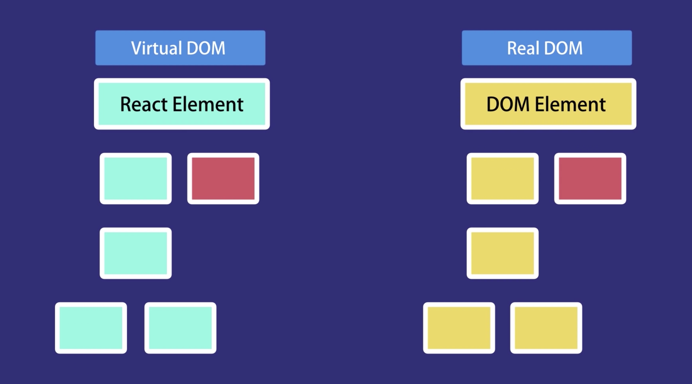

Virtual DOM vs Real DOM
- DOM - Document Object Model.
- The virtual DOM is a programming concept.
- and The virtual DOM is an virtual representation of a UI is kept in memory.
- and it will allways synced with the real DOM by using ReactDOM library.
- This process is called reconciliation.
- Every react component hsa state and render action.
- This state here is the data that we want to display when the component is rendered.
- And the render method, as you can tell, is responsible for describing what the Ul should look like.
- The output of this render method is a React element, which is a simple plain JavaScript object that maps to a DOM element.
- It's not a real DOM element.
- It's just a plain JavaScript object that represents that DOM element in memory.
- So react keeps a lightweight representation of the DOM in memory, which we'll refer to as the virtual DOM.
- Unlike the browser or the real DOM, this virtual DOM is cheap to create.
- when we change the state of a component, we get a new React element.
- React will then compare this element and its children with the previous one.
- It figures out what has changed, and then it will update a part of the real DOM to keep it in sync with the virtual DOM.
